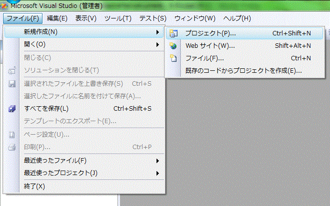
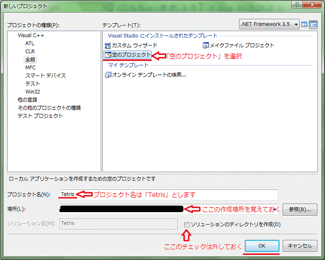
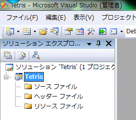
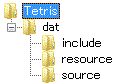
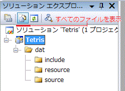

それではVisual Studioでテトリスのプロジェクトを作っていきましょう。
C++の基本がわかっている皆さんならあまり詳しすぎる説明は冗長的ですが、
とりあえず必要なところを解説していきたいと思います。
では「ファイル->新規作成->プロジェクト」でプロジェクトを作成しましょう。

プロジェクトの設定は「空のプロジェクト」。
プロジェクト名は「Tetris」とします。
場所はどこでもいいですが、ちゃんとどこに作るかを把握しておいてください。
「ソリューションのディレクトリ」はフォルダ階層が深くなるので、作りません。
で、「OK」を押す、っと。

初期ソリューション構成はこんな感じになるはずです。

ここで、一端Visual Studioを離れて、エクスプローラを使います。
プロジェクトを作った場所を開き、次のようにディレクトリを作ります。

これは、今後いろいろとソースファイル(*.cpp)やヘッダーファイル(*.h)を追加していくので
それを分類するために作ります。
そして、再びVisual Studioに戻って来て、
ソリューションエクスプローラの「すべてのファイルを表示」を押します。
すると、先ほどのディレクトリ構成が表示されます。

さて、ではこれにソースファイルとヘッダーファイルを追加していきましょう。
まだ中身は空でいいですが、全てのソースファイルの先頭に、
#include "../include/main.h"と書いておいてください。
| draw.cpp | 描画関連の処理を記述します | class.h | クラス定義を記述します |
| fps.cpp | fps表示の処理を記述します | define | 定数やマクロを記述します |
| func.cpp | あまり大きくない各種関数の処理を記述します | func.h | 関数プロトタイプ宣言を記述します |
| ini.cpp | 初期化処理を記述します | GV.h | グローバル変数を記述します |
| key.cpp | キー入力関連の処理を記述します | main.h | メインヘッダーです |
| main.cpp | メイン関数を記述します | typedef.h | typedef宣言を記述します |